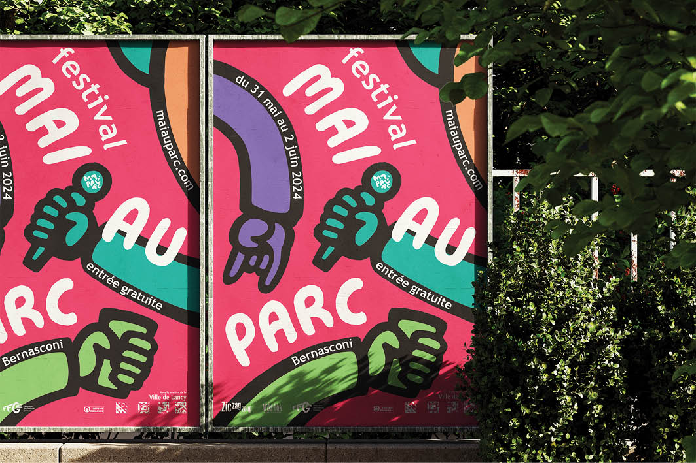
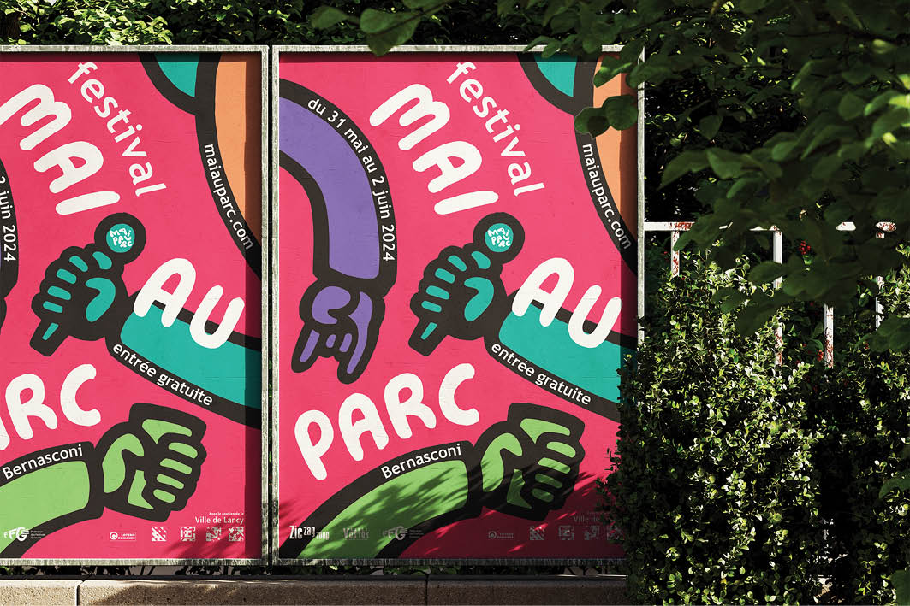

MAI AU PARC
Mai au Parc (May at the Park) is a free annual Swiss music festival held
at Bernasconi Park (Grand Lancy, Geneva) from May 31st to June 2nd, 2024. It
marks the beginning of the open-air festival season in Switzerland, with its
wooded environment contributing to a warm and cozy atmosphere. The client
commissioned an F4-sized poster, a website, banners, and animations for the campaign.
For this project, I chose to create a hand-drawn visual identity inspired by
the dynamic energy of the festival, drawing from Keith Haring's distinctive
art style. Colorful hands and fluid typography set against a warm magenta
background evoke the main themes of Mai au Parc: rhythm, music, and diversity.
Visual identity, Campaign
TOOLS:
Illustration, Animation
DATE:
07.02.24
OBJECT:
Campaign for the festival Mai au Parc, CFPA & commission
LOCATION:
Geneva, Switzerland
 
